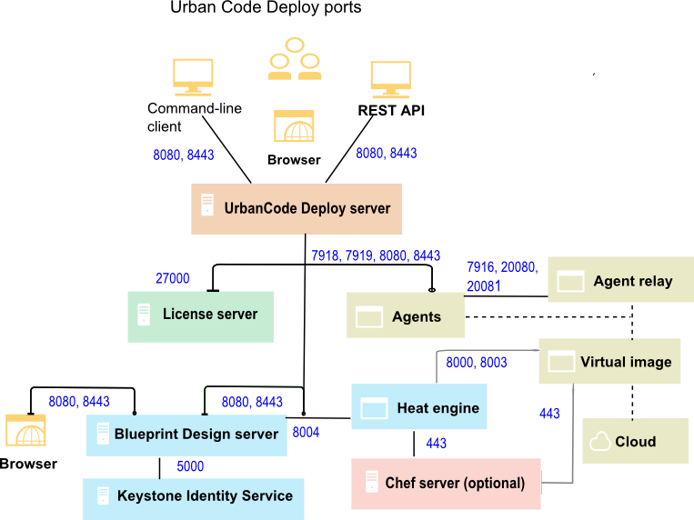

System requirements and performance considerations
The HCL® UrbanCode™ Deploy server runs on Windows™ and UNIX™ systems. Following some guidelines can improve the performance of the server and agents.
For complete system requirements for the HCL UrbanCode Deploy server, agent, and related systems, including information on minimum required hardware and operating system version, see System Requirements for IBM® UrbanCode Deploy. You can generate an up-to-date detailed system requirement report for different contexts, for example: by operating system or by component. To generate a report, on the System Requirements page, select the version and click the desired context. For a list of supported web browsers, select the Prerequisites tab on the generated report and then click Web Browsers.
For guidelines on performance optimization, see the white paper Performance Characteristics of IBM UrbanCode™ Deploy.
You must have a Rational® Common Licensing server with available licenses. See License management.
Important: Beginning in version 6.2.2, the HCL UrbanCode Deploy server and agent relays require a Java™ Runtime Environment (JRE) or Java Development Kit (JDK) version 8.
Note: HCL UrbanCode Deploy is also available as a hosted service. In this case, IBM hosts the server for you. For more information, see the IBM Marketplace.
The following diagram shows the default port numbers that HCL UrbanCode Deploy uses for communication. Most of these ports can change depending on your choices at installation time. The following diagram is only a summary of the defaults.

For more topologies, see Systems and topology overview.
The server must have network access to the following ports:
- The server must be able to initiate connections to the license server. The default port for Rational Common Licensing is 27000. However, in some situations, the server uses different ports to connect to the license server. For more information, or to change the port, see http://www-01.ibm.com/support/docview.wss?uid=swg21454410.
- The server must be able to accept connections from agents and agent relays. By default, agents and relays connect on port 7918.
- Users and agents that do not use a relay must be able to initiate connections to the server through HTTP or HTTPS. The default ports are 8080 for HTTP and 8443 for HTTPS.
- Installing agents remotely on Linux™ or UNIX systems requires the server to initiate connections to the SSH port of the agent computer. The default port for SSH is 22.
- Remote discovery of agents requires the server to initiate connections to port 22 for Linux agents and port 135 for Windows agents. See Discovering agents automatically.
- The server might require access to other ports if you connect to external systems, such as an SMTP server for notifications or to cloud systems that use virtual system patterns, like PureApplication® System or IBM Cloud Orchestrator.
If your agents connect to the server through an agent relay, you must configure your networks and firewalls to allow the following communication. In this case, you install the agent relay on the same network and the same side of the firewall as the agents.
- Agents must be able to open network connections on the agent relay JMS port. The default agent relay JMS port is 7916.
- Agents must be able to open network connections on the agent relay HTTP proxy port. The default agent relay HTTP proxy port is 20080.
- Agents must be able to open a network connection to the Agent Relay CodeStation proxy port (HTTP_proxy + 1, by default 20081).
- Installing agents remotely on Windows systems requires the WinRS agent to initiate connections on ports 80 and 5985 on the target computer.
- If you are using artifact caching as described in Agent security and communication, agents must be able to open network connections on the agent relay artifact caching port. The agent relay artifact caching port is 20081.
- Agents run steps from automation plug-ins and source configuration plug-ins. Some of these steps require that agents create network connections to an external system.
- Agent relays must be able to open network connections on the server JMS port. The default server JMS port is 7918.
- Agent relays must be able to open network connections on the server HTTP and HTTPs ports. The default HTTP(S) ports are 8080 and 8443. It is not possible to reverse the direction of this connection.
For example, if your server is on an internal network and your agents are on an external network such as a public cloud, you install the agent relay on the cloud and have the agents connect to the agent relay. Then, the agent relay connects through the firewall to the internal network.
If your agents connect directly to the server, you must configure your networks and firewalls to allow the following communication:
- Agents must be able to open network connections on the server JMS port. The default server JMS port is 7918.
- Agents must be able to open network connections on the server HTTP and HTTPS ports. The default HTTP(S) ports are 8080 and 8443.
- Agents run steps from automation plug-ins and source configuration plug-ins. Some of these steps require that agents create network connections to an external system.
The blueprint design server must meet the following requirements:
- You can install the blueprint design server on Windows or Linux operating systems. Linux operating systems must have access to repositories for installing required packages. The operating system must have the most recent package updates. For more information, see Installing and Managing Software in the Red Hat Enterprise Linux customer portal. In most cases, the blueprint design server needs access to the Internet to download prerequisites, but you can also configure an internal package manager for these required packages. The cloud discovery service is automatically installed as part of the blueprint design server installation process.
-
Make sure that the appropriate ports are open. See Ports, protocols, and services.
Note: If you install the blueprint design server on the same computer where you installed the server, you must use different ports.
-
You need an OpenStack Keystone server. See http://keystone.openstack.org.
Note: If you install a heat engine, you can choose to install a Keystone server during the engine installation process.
-
If you install the blueprint design server on a Windows operating system, your paths cannot contain more than 250 characters.
- Virtual images must meet the requirements in Configuring images for use with the blueprint designer.
- The blueprint design server requires a Heat orchestration engine. By default, the blueprint design server uses port 8004 to communicate with the engine.
The Heat orchestration engine must meet the following requirements:
-
You must install the engine on a host that runs a specific version of Red Hat Enterprise Linux (RHEL).
- In version 6.2.2 and later, the HCL UrbanCode Deploy installer can install engines for the blueprint design server only on RHEL version 7. No other operating system is supported, including RHEL version 6 or earlier. To use a different operating system, you can install an OpenStack Heat engine manually on that operating system and then extend that engine for use with the blueprint design server; see Extending an existing OpenStack engine.
-
The engine installer installs only a specific version of the OpenStack Heat orchestration engine.
- In version 6.2.2 and later, the installer installs only OpenStack Kilo engines. To use a different version of the OpenStack Heat orchestration engine, you can extend an existing engine of that version; see Extending an existing OpenStack engine. You can extend OpenStack Icehouse, Juno, Kilo, Liberty, and Mitaka engines for use with the blueprint design server.
-
The operating system must have the most recent package updates. For more information, see Installing and Managing Software in the Red Hat Enterprise Linux customer portal.
- You can install the engine and blueprint design server on the same computer or on different computers.
-
The operating system must have access to Yum repositories for installing required packages. In most cases, the engine needs access to the Internet to download prerequisites, but you can also configure an internal package manager for these required packages.
-
You must install the engine on a host that runs a specific version of Red Hat Enterprise Linux (RHEL).
- In version 6.2.2 and later, the HCL UrbanCode Deploy installer can install engines for the blueprint design server only on RHEL version 7. No other operating system is supported, including RHEL version 6 or earlier. To use a different operating system, you can install an OpenStack Heat engine manually on that operating system and then extend that engine for use with the blueprint design server; see Extending an existing OpenStack engine.
-
The engine installer installs only a specific version of the OpenStack Heat orchestration engine.
- In version 6.2.2 and later, the installer installs only OpenStack Kilo engines. To use a different version of the OpenStack Heat orchestration engine, you can extend an existing engine of that version; see Extending an existing OpenStack engine. You can extend OpenStack Icehouse, Juno, Kilo, Liberty, and Mitaka engines for use with the blueprint design server.
-
The operating system must have the most recent package updates. For more information, see Installing and Managing Software in the Red Hat Enterprise Linux customer portal.
- You can install the engine and blueprint design server on the same computer or on different computers.
- The operating system must have access to Yum repositories for installing required packages. In most cases, the engine needs access to the Internet to download prerequisites, but you can also configure an internal package manager for these required packages.
The blueprint designer is compatible with the following cloud systems:
- IBM SoftLayer®
- Amazon Elastic Compute Cloud
- VMware vCenter Server 5.5 to 6.0. To model network resources, VMware NSX is required; see Modeling new network resources.
- VMware vRealize Automation 7.0 and 7.1
- OpenStack and clouds that are based on OpenStack, such as IBM Cloud Orchestrator, version 2.4. The blueprint design server supports OpenStack and OpenStack-based clouds on the Icehouse, Juno, and Kilo levels. To provision environments on these clouds, an engine that has the matching OpenStack version is required.
- Microsoft™ Azure
- Google Cloud Platform
You must configure virtual images in supported clouds for communication with HCL UrbanCode Deploy:
- Virtual images must be able to open network connections on the server HTTP and HTTPs ports. The default HTTP(S) ports are 8080 and 8443. It is not possible to reverse the direction of this connection.
- The agent that is installed on the virtual image must be able to open network connections on the agent relay JMS port. The default agent relay JMS port is 7916.
- Virtual images must be able to open network communication ports to the Heat engine. The default Heat engine ports are 8000 and 8003.
- If the virtual image contains a Chef role, it must be able to open network communication ports to the Chef server. The default Chef server communication port is 443.
For best performance, follow these guidelines:
- Because agent activity can sometimes become resource intensive, agents are usually installed on systems other than the one where the HCL UrbanCode Deploy server is located.
- When possible, install the server as a dedicated user account. However, HCL UrbanCode Deploy runs well as a root user (or local system user on Windows), and running this way is the easiest method to avoid permission errors.
- Install the agent as dedicated system account. Ideally, the account is dedicated to HCL UrbanCode Deploy. Because HCL UrbanCode Deploy agents run remote commands, it is best to create a user specifically for the agent and grant this user only the appropriate privileges.
- Installing multiple agents on the same system is not necessary because a single agent can run parallel deployments as different users. While idle agents use minimal resources, many agents on the same system might have a noticeable impact.
- For best server performance, install the server on a system that is dedicated to the server and does not run any other major software.
-
For servers on Linux or UNIX, if the server is connected to many agents (400 or more), increase the process and file limit for the server. For example, for Red Hat Enterprise Linux, version 7, use the /etc/security/limits.conf file. For AIX, use the /etc/security/limits.d/90-nproc.conf file. Add the following lines to the appropriate file and then restart the server computer:
deployUser soft nofile 60000 deployUser hard nofile 60000 deployUser soft nproc 65535 deployUser hard nproc 65535Use the name of the operating system user that is running the server for
deployUser.Similarly, if an agent relay connects to many agents, increase the process and file limit for the relay in the same way.